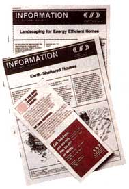
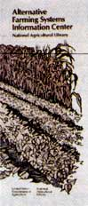
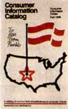
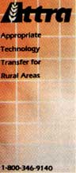

Issue # 115 - January/February 1989 by Samuel Johnson
MAYBE IT'S BECAUSE SO MANY OF US associate hearing from the government with the dreaded arrival of income tax forms. Whatever the reason, the most underused source of useful information in this country, other perhaps than libraries, is surely Uncle Sam. The United States government is far and away the nation's largest publisher and most prolific disseminator of facts. What's more, most of the information provided under federal auspices is bargain priced: free, in many cases, and comparatively lowcost in most others.
Here are a few of our favorite government-sponsored information services.
Despite its acronym, CAREIRS has nothing whatever to do with jobs or job training or career counseling. Its full name describes the agency's function better: Conservation and Renewable Energy Inquiry and Referral Service. At the flick of a toll-free phone number, you can get firstrate information on, and answers to questions about, virtually any aspect of alternative energy or energy conservation. And if the CAREIRS people can't help you on the spot, or if your question is of a particularly complex or technical nature, they'll refer you to experts or organizations-private, federal, state or local-who can give you the information you need.
In most cases, though, CAREIRS will at least be able to send you a detailed fact sheet or brochure on the topic in which you're interested, whether it be home insulation or weatherization, tuning up your furnace, or the practical application of renewable energy: solar, photovoltaic, wind, bioconversion, wood heating, small-scale hydroelectricity, geothermal, and alcohol fuels. CAREIRS' fact sheets are free and do a fine job of explaining the basics; most also include an extensive bibliography to further reading on the subject, along with a list of relevant groups and associations.
Recent examples of CAREIRS fact sheets: "Landscaping for Energy Efficient Homes" (FS 220) describes design fundamentals, shows how to establish windbreaks that block winter winds and funnel summer breezes, and provides sample plans for homes in the four major climatic regions: cool, temperate, hot/humid and hot/arid. "Earth-Sheltered Houses" (FS 120) covers costs, site and soil analysis, options in design and construction materials, and even potential problems (such as getting financing and complying with local building codes).
CAREIRS' toll-free phone number for folks anywhere in the continental U.S., Puerto Rico or the Virgin Islands is 800/523-2929; from Alaska or Hawaii, it's 800/233-3071. Or you can write to CAREIRS, P.O. Box 8900, Silver Spring, MD 20907.
For decades, rural citizens have turned to their counties' extension services, operated in conjunction with state land-grant colleges and the U.S. Department of Agriculture, for help and advice on almost any aspect of farm operation. Local extension services remain invaluable sources of assistance in most matters and are just a phone call away (the number is usually included in county government listings, under "Agriculture Extension"). In many instances, however, extension service outlets have been unable to provide much help for those interested in farming alternatives, such as organic agriculture or raising and marketing nontraditional crops.
But the demand for general and technical support in sustainable agriculture has burgeoned, and the USDA Extension Service has responded by establishing an information center known as ATTRA (Appropriate Technology Transfer for Rural Areas). To answer questions and requests for information, the organization draws upon a variety of sources, including printed literature, electronic databases and-perhaps most importantly-a diverse adviser network of specialists and practitioners in such fields as agricultural economics and marketing, soil science, water and waste management and biological pest control. It's a little like having your own board of agricultural consultants. ATTRA staff members are knowledgeable and helpful and respond to requests with personal, tailored information. You can write ATTRA (7777 Walnut Grove Rd., Box 17, Memphis, TN 38119) or call toll-free (800/346-9140).
With some 1.8 million volumes and subscriptions to 26,000 periodicals from around the globe, the National Agricultural Library in Beltsville, Maryland, is the largest ag library in the free world. It is also the central resource for USDA field libraries across the country and is the producer of AGRICOLA, a bibliographic database containing more than 2 million references to agricultural literature.
The Alternative Farming Systems (AFS) Information Center is one of several specialized libraries within the NAL and is set up as a reference service for anyone interested in alternative farming practices. AFS can help you find your way around the NAL's vast collection, refer you to organizations or experts in special fields, bring you up-to-date on current USDA research projects and provide you with extensive bibliographies on such topics as integrated pest management and legume-based crop rotation. The staff can even perform brief complimentary searches of the AGRICOLA database for you. More extensive searches, as well as pho tocopies of selected AGRICOLA articles, are available for a cost-recovery fee.
Don't get the idea that AFS is strictly for agricultural researchers and extension service personnel, or wholly aimed at providing technical information; it's not. The service is just as valuable for a consumer interested in learning more about organic foods, a farmer considering alternatives to chemical-intensive methods or a gardener wanting to know the best ways to make compost.
Write or call AFS Information Center, National Agricultural Library, Room 111, Beltsville, MD 20705; 301/344-3704.
In 1970, CIC was set up to serve as a central distribution point for consumer-oriented literature published by federal agencies; a great idea, because although a lot of good information was available before CIC, it was up to poor Joe Consumer to track it down. Now all you have to do is write to the Consumer Information Center (P.O. Box 100, Pueblo, CO 81002) and ask to be put on a mailing list to receive the Consumer Information Catalog. Published quarterly, the free catalogue describes the best new federal consumer booklets and periodicals. Many of the publications are free, and all are bargains. To give you an idea of the variety of information available, here's a sampling from the latest Consumer Information Catalog, which contains more than 200 titles: "Starting and Managing a Small Service Business" ($2), "Get Fit! A Handbook for Youth Ages 6-17" (50 cents), "Eating to Lower Your High Blood Cholesterol" ($2), "Are There Any Public Lands for Sale?" ($1), "Urban Homesteading" (50 cents), "A Citizen's Guide to Radon" (50 cents), "Lesser Known Areas of the National Park System" ($1.50), "A Look at the Planets" ($1) and "Endangered Species" (free).
And that's just scratching the surface of what's available from the U.S. government. Federal publications number in the tens of thousands, and most libraries have directories and indexes to help you find them. Anytime you have a question or need to learn about something, remember to ask the reference librarian to help you find relevant government publications. Uncle Sam wants you to use that information.
|
 Information on a wide range of energy alternatives is available from CAREIRS. |
 There's now abundant government-generated data on organic agricultural methods. |
 The CIC catalogue provides easy access to information |
|
 ATTRA operates an alternative agriculture ""brain trust."" AFS Information Center |
|
|